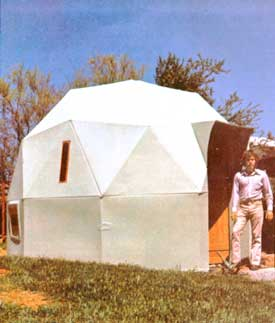

There are domes, and there are domes . . . and then there are the bolt-together cardboard domes sold by Steve Elias of San Rafael, California.
Steve's line of compact (14' across), lightweight (300 pounds) geodesic modules-which have recently undergone A.I.D. (Agency for International Development) field tests in Guatemala-combine an impressive array of virtues:
[1] Low cost. (Steve sells kits for $400 each . . . little more than you'd pay for a comparably sized tent.)
[2] Ease of construction. According to the kit's designer, three unskilled people can build a dome like the one shown here in three hours (and seal it with caulking compound in another hour) using nothing but a screwdriver, tile knife, wrench, caulking gun, and clamps.
[3] Durability. Says Steve: "What I'm using is NOT ordinary cardboard. It's a double-layer, corrugated fiberboard bonded together with waterproof resin and impregnated-not coated-with polywax. Believe me, it's tough!"
[4] Livability. "I've been living very comfortably in one of these 160-square-foot units in my backyard for nearly a year," claims Steve. "I've got lights, an Aladdin heater, a telephone, and all the furnishings-bed, desk, bookcase, wall hangings, etc.-of a regular bedroom."
[5] Versatility. Two or more modules can easily be linked together to create a "dome-house" with separate toilet, sleeping, and kitchen facilities. (Steve has even stacked domes!) Conceivably, a dozen or more units could be joined to form semi-permanent quarters for intentional communities, day schools, and so on.
Although his newly formed company is primarily engaged in research and development (rather than sales) activities at this time, Steve Elias says he'll gladly mail a slick fact- and photo-filled descriptive brochure to anyone who sends him a $2.00 contribution. The address: Corrugated Domes, 31 Vendola Drive, San Rafael, Calif. 94903.
|
|
 |
|